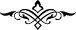

Çalışmak gerek; yoksa utangaçlık gelir,
Can yükünü bir başka dünyaya taşırken.
“Vallahi azığın az, yolun uzak ve engellerin zorlu oluşu beni ağlattı. Bundan sonra,
cennete mi, cehenneme mi gideceğimi bilemiyorum.” İşte onun bu hikmetli sözlerini
işitince: “İnsanlar, senin deli olduğunu zannediyorlar.” dedim. “Deli değilim. Ancak
Mevlâ’mın sevgisi kalbimi ve içimi kapladı; etim, kanım ve kemiklerim arasında
dolaşmaktadır.” diye karışılık verdi.
Leylâ’nın menzili üzerinde bir çok tehlike vardır
Oraya ayak basmanın ilk şartı mecnun olmaktır
Kervan gitti ve sen hâlâ uykudasın, önünde çöl
Nasıl yol gidersin, kimden sorar, ne yaparsın, halin nice olur?
Aklı olan sürçüp hata ettiği takdirde tevbe ve istiğfar etmekte acele etsin ki Melik ve
Kahhâr olan Allah’ın azâbından kurtulsun. Nitekim Allah Teâlâ şöyle buyurmuştur:
“Kim îman eder, halini düzeltirse, onlara korku yoktur...” (el-En‘âm, 6/48)
Rivayet edilmiştir ki: Melekler kulun günahlarını semaya çıkarırlar. Onları Levh-i
mahfuzla karşılaştırdıklarında günahların yerinde iyilikler olduğunu görürler. Bunun
üzerine secdeye kapanarak şöyle derler: Ya Rabbi, sen biliyorsun ki, biz ancak onun
işlediğini yazdık. Allah Teâlâ buyurur ki: “Doğru söylediniz, ancak kulum hatasına
pişman oldu. Gözyaşı ile benden yardım taleb etti. Ben de onun günahını affettim, ona
lütuf ve ikramda bulundum. Ben ikram edenlerin en cömerdiyim.”
İşte îman, amelini ıslah, kusur ve hatalara pişman olmak, dünya ve ahirette kurtuluş
sebebidir.
Büyüklerden biri şöyle demiştir: Hakikat bakımından îman ve İslam’ın, aynı şey
olması mümkündür. Fakat her ikisi de geleneksel olarak bir tür mecaz ile tahsis
edilmiştir. Bilindiği gibi esas mânâsı bu olduğu için kalben tasdike konu olan her şeye
“îman” adı verilmiştir.
[104]. el-Câmiu’l-kebîr, II, 405